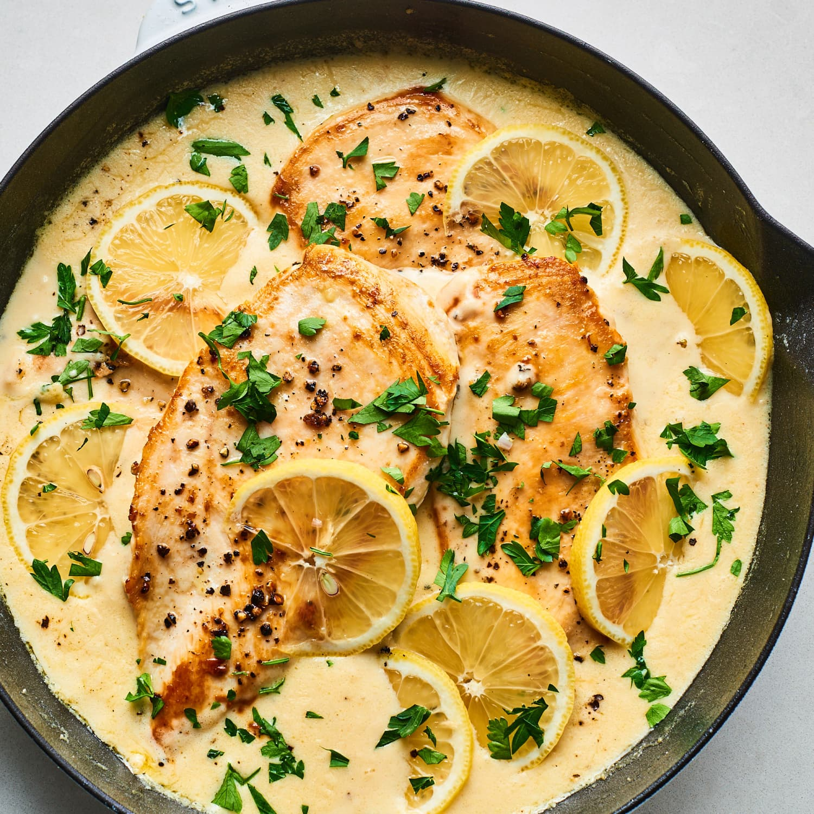

Chicken and Vegetable Stir-Fry
Enjoy this quick and easy chicken stir-fry recipe packed with colorful vegetables and delicious flavors.
-
Preparation time
- Total: Approximately 30 minutes
- Preparation: 15 minutes
- Cooking: 15 minutes
-
Ingredients
- 400 grams chicken breast, sliced
- 2 tablespoons soy sauce
- 2 tablespoons oyster sauce
- 1 tablespoon cornstarch
- 1 tablespoon vegetable oil
- 2 cloves garlic, minced
- 1 onion, sliced
- 1 red bell pepper, sliced
- 1 yellow bell pepper, sliced
- 1 cup broccoli florets
- 1 carrot, julienned
- 1/2 cup snow peas, trimmed
- 1 teaspoon grated ginger
- Salt and pepper to taste
- Sesame seeds for garnish (optional)
-
Instructions
-
In a bowl, combine the sliced chicken breast with soy sauce, oyster sauce, and cornstarch. Mix well and set aside to marinate for 10-15 minutes.
-
Heat vegetable oil in a large skillet or wok over medium-high heat. Add minced garlic and grated ginger, sauté for 1 minute until fragrant.
-
Add the marinated chicken to the skillet, spreading it out into a single layer. Cook without stirring for 2-3 minutes until browned, then stir-fry for another 2-3 minutes until cooked through. Remove the chicken from the skillet and set aside.
-
In the same skillet, add sliced onion, bell peppers, broccoli, carrot, and snow peas. Stir-fry for 4-5 minutes until vegetables are tender yet still crisp.
-
Return the cooked chicken to the skillet and toss with the vegetables. Season with salt and pepper to taste. Stir-fry for an additional 1-2 minutes until everything is heated through.
-
Garnish with sesame seeds if desired, then serve the chicken and vegetable stir-fry hot over cooked rice or noodles.
Nutrition
The table below shows nutritional values per serving.
Calories
|
310 kcal
|
Carbohydrates
|
20g
|
Protein
|
25g
|
Fat
|
15g
|
Fiber
|
5g
|
Chicken Curry
Chicken curry is a flavorful and aromatic dish that's popular in many cuisines around the world. This recipe combines tender chicken pieces with a rich and creamy curry sauce, infused with spices and herbs, for a delicious and comforting meal.
-
Preparation Time
- Total: Approximately 1 hour
- Preparation: 20 minutes
- Cooking: 40 minutes
-
Ingredients
- 1 kg (2.2 lbs) chicken pieces, bone-in and skinless
- 2 tablespoons vegetable oil
- 2 onions, finely chopped
- 3 cloves garlic, minced
- 1-inch piece of ginger, grated
- 2 tomatoes, chopped
- 2 tablespoons curry powder
- 1 teaspoon ground turmeric
- 1 teaspoon ground cumin
- 1 teaspoon ground coriander
- 1 teaspoon paprika
- 1/2 teaspoon chili powder (adjust to taste)
- 1 can (400 ml) coconut milk
- Salt and pepper to taste
- Fresh cilantro leaves for garnish
-
Instructions
-
Heat the vegetable oil in a large pot or skillet over medium heat. Add the chopped onions and cook until softened, about 5 minutes.
-
Stir in the minced garlic and grated ginger, and cook for another 2 minutes until fragrant.
-
Add the chopped tomatoes to the pot and cook until they begin to break down, about 5-7 minutes.
-
Stir in the curry powder, ground turmeric, ground cumin, ground coriander, paprika, and chili powder. Cook for 2-3 minutes to toast the spices.
-
Add the chicken pieces to the pot and stir to coat them with the spice mixture.
-
Pour in the coconut milk and season with salt and pepper to taste. Bring the mixture to a simmer, then reduce the heat to low, cover, and cook for 30-35 minutes, or until the chicken is cooked through and tender.
-
Once cooked, remove from heat and garnish with fresh cilantro leaves. Serve hot with rice or naan bread. Enjoy your delicious chicken curry!
Creamy Mushroom Chicken
Creamy mushroom chicken is a delicious and comforting dish that's perfect for a cozy dinner. Tender chicken breasts are cooked in a creamy mushroom sauce, infused with garlic and herbs, for a flavorful and satisfying meal.
-
Preparation Time
- Total: Approximately 30 minutes
- Preparation: 10 minutes
- Cooking: 20 minutes
-
Ingredients
- 4 boneless, skinless chicken breasts
- 2 tablespoons olive oil
- 2 tablespoons butter
- 8 oz (225g) mushrooms, sliced
- 4 cloves garlic, minced
- 1 cup (240ml) chicken broth
- 1 cup (240ml) heavy cream
- 1 teaspoon dried thyme
- 1 teaspoon dried oregano
- Salt and pepper to taste
- Fresh parsley for garnish
-
Instructions
-
Season the chicken breasts with salt and pepper on both sides.
-
In a large skillet, heat the olive oil over medium-high heat. Add the chicken breasts and cook for about 5-6 minutes on each side, or until browned and cooked through. Remove the chicken from the skillet and set aside.
-
In the same skillet, melt the butter. Add the sliced mushrooms and minced garlic, and cook until the mushrooms are golden brown and tender, about 5-6 minutes.
-
Pour in the chicken broth and scrape the bottom of the skillet to deglaze it, stirring to combine with the mushrooms.
-
Stir in the heavy cream, dried thyme, and dried oregano. Bring the mixture to a simmer and cook for 5-7 minutes, or until the sauce thickens slightly.
-
Return the cooked chicken breasts to the skillet and simmer for an additional 2-3 minutes, allowing the flavors to meld together.
-
Garnish with fresh parsley and serve the creamy mushroom chicken hot over cooked rice or pasta. Enjoy your delicious meal!
Barbecue Sauce Chicken
Barbecue sauce chicken is a classic dish that's perfect for grilling season. Tender chicken pieces are coated in a tangy and flavorful barbecue sauce, then grilled to perfection, resulting in a delicious and satisfying meal.
-
Preparation Time
- Total: Approximately 1 hour (including marinating time)
- Preparation: 15 minutes
- Cooking: 45 minutes
-
Ingredients
- 4 bone-in, skin-on chicken thighs
- 4 bone-in, skin-on chicken drumsticks
- 1 cup barbecue sauce
- 2 tablespoons olive oil
- 2 cloves garlic, minced
- 1 tablespoon soy sauce
- 1 tablespoon Worcestershire sauce
- 1 tablespoon brown sugar
- 1 teaspoon smoked paprika
- 1/2 teaspoon onion powder
- Salt and pepper to taste
- Fresh parsley for garnish (optional)
-
Instructions
-
In a small bowl, whisk together the barbecue sauce, olive oil, minced garlic, soy sauce, Worcestershire sauce, brown sugar, smoked paprika, onion powder, salt, and pepper to make the marinade.
-
Place the chicken thighs and drumsticks in a large resealable plastic bag or a shallow dish. Pour the marinade over the chicken, ensuring that all pieces are well coated. Seal the bag or cover the dish, and marinate in the refrigerator for at least 30 minutes, or up to overnight for best flavor.
-
Preheat your grill to medium-high heat (about 375°F to 400°F).
-
Remove the chicken from the marinade and shake off any excess. Discard the remaining marinade.
-
Place the chicken pieces on the preheated grill and cook for about 20-25 minutes, turning occasionally, or until the internal temperature reaches 165°F (75°C) and the juices run clear.
-
During the last 5 minutes of grilling, brush the chicken pieces with additional barbecue sauce for extra flavor.
-
Once done, remove the chicken from the grill and let it rest for a few minutes before serving. Garnish with fresh parsley if desired. Enjoy your delicious barbecue sauce chicken!

Lemon Garlic Chicken
Lemon garlic chicken is a zesty and flavorful dish that's perfect for any occasion. Tender chicken breasts are marinated in a tangy lemon garlic marinade, then grilled to perfection, resulting in a delicious and aromatic meal that's sure to impress.
-
Preparation Time
- Total: Approximately 1 hour (including marinating time)
- Preparation: 15 minutes
- Cooking: 45 minutes
-
Ingredients
- 4 boneless, skinless chicken breasts
- 2 lemons, juiced and zested
- 4 cloves garlic, minced
- 2 tablespoons olive oil
- 1 tablespoon honey
- 1 teaspoon dried oregano
- 1 teaspoon dried thyme
- 1/2 teaspoon paprika
- Salt and pepper to taste
- Fresh parsley for garnish
-
Instructions
-
In a small bowl, whisk together the lemon juice, lemon zest, minced garlic, olive oil, honey, dried oregano, dried thyme, paprika, salt, and pepper to make the marinade.
-
Place the chicken breasts in a shallow dish or a large resealable plastic bag. Pour the marinade over the chicken, ensuring that all pieces are well coated. Cover the dish or seal the bag, and marinate in the refrigerator for at least 30 minutes, or up to 4 hours for best flavor.
-
Preheat your grill to medium-high heat (about 375°F to 400°F).
-
Remove the chicken from the marinade and discard any excess marinade.
-
Place the chicken breasts on the preheated grill and cook for about 6-8 minutes on each side, or until the internal temperature reaches 165°F (75°C) and the juices run clear.
-
Once done, remove the chicken from the grill and let it rest for a few minutes before serving. Garnish with fresh parsley and serve hot with your favorite side dishes. Enjoy your flavorful lemon garlic chicken!